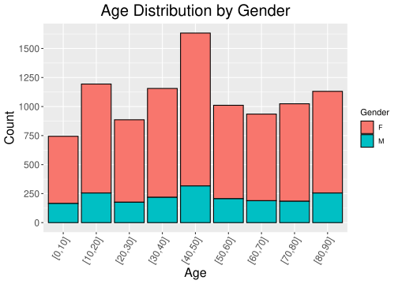
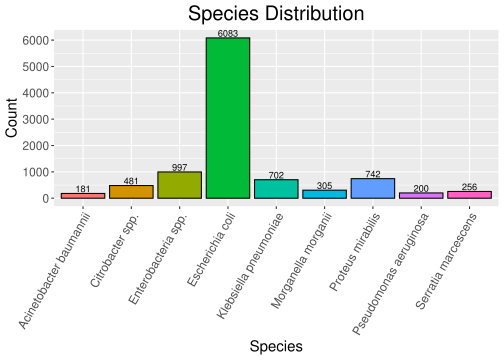
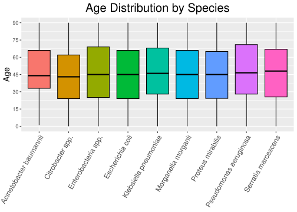
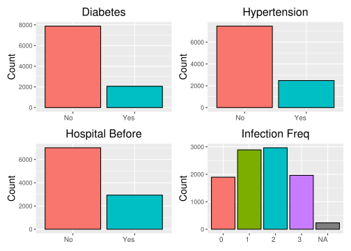
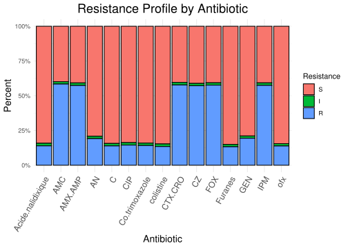
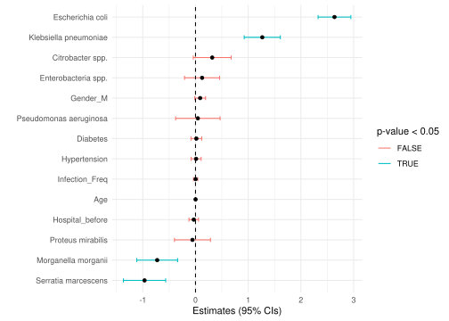
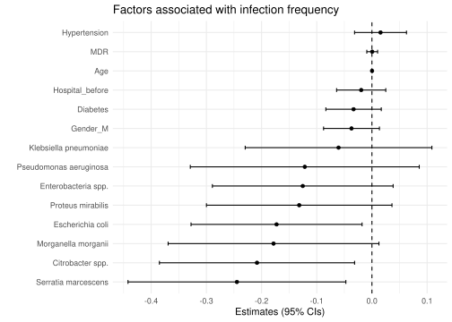
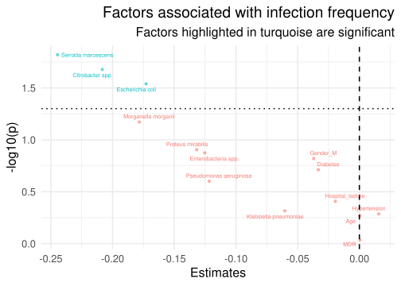
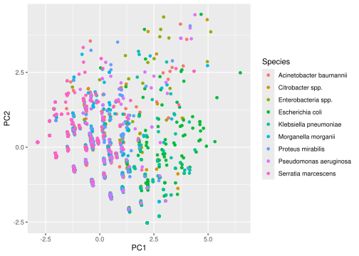

library("tidyverse")
library("here")
library("RKaggle")00_all
01_load
Uploading Data
Data
Data for this project comes from: https://www.kaggle.com/datasets/adilimadeddinehosni/multi-resistance-antibiotic-susceptibility/data
Load Libraries
Create Data Folder
data_dir <- here("data")
raw_data_dir <- here("data", "_raw")
results_dir <- here("results")
if( !dir.exists(data_dir) ){
dir.create(path = data_dir)
}
if( !dir.exists(raw_data_dir) ){
dir.create(path = raw_data_dir, recursive = TRUE)
}
if( !dir.exists(results_dir) ){
dir.create(path = results_dir)
}Upload Data
raw_file <- here("data", "_raw", "Bacteria_dataset_Multiresistance.csv")
# Download data from kaggle and save if not already present
if (!file.exists(raw_file)) {
df <- RKaggle::get_dataset("adilimadeddinehosni/multi-resistance-antibiotic-susceptibility")
write_csv(df, raw_file)
}02_clean
Load Libraries
library("tidyverse")
library("here")Load Functions
source(here("R/99_proj_func.R"))Load Data
Handling of different types of NAs
mdr_data <- read.csv(here("data/_raw/Bacteria_dataset_Multiresistance.csv"),
na.strings = c("", " ", "NA", "?", "missing", "unknown", "None", "error"))Data Cleaning
Analyze for duplicates and select relevant columns
# Identify any duplicates to remove
dup_IDs <- mdr_data |>
add_count(ID, name = "n") |>
filter(n > 1)
#No duplicates in the dataset
dup_IDs [1] ID Name Email Address
[5] age.gender Souches Diabetes Hypertension
[9] Hospital_before Infection_Freq AMX.AMP AMC
[13] CZ FOX CTX.CRO IPM
[17] GEN AN Acide.nalidixique ofx
[21] CIP C Co.trimoxazole Furanes
[25] colistine Collection_Date Notes n
<0 rows> (or 0-length row.names)mdr_data <- mdr_data |>
select(-ID, -Name, -Email, -Address, -Collection_Date, -Notes) Separate data into individual columns and remove NA rows
mdr_data <- mdr_data |>
separate(age.gender,
into = c("Age", "Gender"),
sep = "/") |>
separate(Souches,
into = c("ID", "Species"),
sep = " ",
extra = "merge") |> # only separate based on the first space
select(-ID) |>
filter(!(is.na(Species))) Identify typos and inconsistencies in naming
#get_unique_counts is a function in 99_proj_func.R
res <- map(colnames(mdr_data),
~ get_unique_counts(mdr_data, .x))Rename accordingly
mdr_data <- mdr_data |>
mutate(Species = case_when(
Species %in% c("E.cli", "E.coi", "E.coli", "E. coli") ~ "Escherichia coli",
Species %in% c("Klbsiella pneumoniae", "Klebsie.lla pneumoniae") ~ "Klebsiella pneumoniae",
Species %in% c("Enter.bacteria spp.", "Enteobacteria spp.") ~ "Enterobacteria spp.",
Species %in% c("Prot.eus mirabilis", "Protus mirabilis", "Proeus mirabilis") ~ "Proteus mirabilis",
TRUE ~ Species # Keep everything else unchanged
))
mdr_data <- mdr_data |>
mutate(
Diabetes = case_when(
Diabetes == "True" ~ "Yes",
TRUE ~ Diabetes
),
Hypertension = case_when(
Hypertension == "True" ~ "Yes",
TRUE ~ Hypertension
)
)
#fix_resistance is a function in 99_proj_func.R
mdr_data <- mdr_data |>
mutate(across(colnames(mdr_data)[c(8:ncol(mdr_data))], fix_resistance))Save the cleaned data
write.csv(mdr_data, here("data/02_dat_clean.csv"), row.names = FALSE)03_augment
Load Libraries
library("tidyverse")
library("here")Load Functions
source(here("R/99_proj_func.R"))Load Data
mdr_data <- read.csv(here("data/02_dat_clean.csv"))Create New Table with Name and Class of Antibiotics
antibiotic_table <- tibble(
Antibiotic = c(
"AMX.AMP", "AMC", "CZ", "FOX", "CTX.CRO", "IPM",
"GEN", "AN",
"Acide.nalidixique", "ofx", "CIP",
"C", "Co.trimoxazole", "Furanes", "colistine"
),
Full_Name = c(
"Amoxicillin / Ampicillin",
"Amoxicillin + Clavulanic Acid",
"Cefazolin",
"Cefoxitin",
"Cefotaxime / Ceftriaxone",
"Imipenem",
"Gentamicin",
"Amikacin",
"Nalidixic Acid",
"Ofloxacin",
"Ciprofloxacin",
"Chloramphenicol",
"Trimethoprim + Sulfamethoxazole",
"Nitrofurantoin",
"Colistin"
),
Class = c(
# β-lactams (Beta-lactams)
"β-lactams (Beta-lactams)",
"β-lactams (Beta-lactams)",
"β-lactams (Beta-lactams)",
"β-lactams (Beta-lactams)",
"β-lactams (Beta-lactams)",
"β-lactams (Beta-lactams)",
# Aminoglycosides (Aminosides)
"Aminoglycosides (Aminosides)",
"Aminoglycosides (Aminosides)",
# Quinolones / Fluoroquinolones
"Quinolones / Fluoroquinolones",
"Quinolones / Fluoroquinolones",
"Quinolones / Fluoroquinolones",
# Other Important Agents
"Other Important Agents",
"Other Important Agents",
"Other Important Agents",
"Other Important Agents"
),
stringsAsFactors = FALSE
)
antibiotic_table# A tibble: 15 × 4
Antibiotic Full_Name Class stringsAsFactors
<chr> <chr> <chr> <lgl>
1 AMX.AMP Amoxicillin / Ampicillin β-lactams… FALSE
2 AMC Amoxicillin + Clavulanic Acid β-lactams… FALSE
3 CZ Cefazolin β-lactams… FALSE
4 FOX Cefoxitin β-lactams… FALSE
5 CTX.CRO Cefotaxime / Ceftriaxone β-lactams… FALSE
6 IPM Imipenem β-lactams… FALSE
7 GEN Gentamicin Aminoglyc… FALSE
8 AN Amikacin Aminoglyc… FALSE
9 Acide.nalidixique Nalidixic Acid Quinolone… FALSE
10 ofx Ofloxacin Quinolone… FALSE
11 CIP Ciprofloxacin Quinolone… FALSE
12 C Chloramphenicol Other Imp… FALSE
13 Co.trimoxazole Trimethoprim + Sulfamethoxazole Other Imp… FALSE
14 Furanes Nitrofurantoin Other Imp… FALSE
15 colistine Colistin Other Imp… FALSE Joining Antibiotic Table with MDR data
Antibiotic = c(
"AMX.AMP", "AMC", "CZ", "FOX", "CTX.CRO", "IPM",
"GEN", "AN",
"Acide.nalidixique", "ofx", "CIP",
"C", "Co.trimoxazole", "Furanes", "colistine"
)
# Pivot MDR Data to long form
mdr_long <- mdr_data |>
pivot_longer(cols = all_of(Antibiotic),
names_to = "Antibiotic",
values_to = "Resistance")
# Join Antibiotics table to mdr_long
mdr_joined <- mdr_long |>
left_join(antibiotic_table, by="Antibiotic")write.csv(mdr_joined, here("data/03_dat_aug_long.csv"), row.names = FALSE)MDR variable
To make linear model we will need a MDR variable, which assigns a numerical score to the resistance profile of each isolate. For every antibiotic tested, we added 1 point if the isolate was classified as Resistant (R) and 0.5 points if it was classified as Intermediate (I), while Susceptible (S) contributed 0 points. By summing these values across all antibiotics for each sample, we obtained a continuous MDR score that reflects the degree of multidrug resistance.
antibiotics_cols <- colnames(mdr_data)[c(8:ncol(mdr_data))]
#Apply the case_when function to mutate every antibiotic column and sum into MDR variable
#Count resistance is a function in 99_proj_func.R
mdr_wide <- mdr_data |>
mutate(
across(antibiotics_cols,
count_resistance)) |>
mutate(MDR = rowSums(across(antibiotics_cols))) |>
drop_na(Age, Gender, Species, Diabetes, Hypertension, Hospital_before, Infection_Freq, MDR) #Drop all NA in the columns used to modelWarning: There was 1 warning in `mutate()`.
ℹ In argument: `across(antibiotics_cols, count_resistance)`.
Caused by warning:
! Using an external vector in selections was deprecated in tidyselect 1.1.0.
ℹ Please use `all_of()` or `any_of()` instead.
# Was:
data %>% select(antibiotics_cols)
# Now:
data %>% select(all_of(antibiotics_cols))
See <https://tidyselect.r-lib.org/reference/faq-external-vector.html>.We have to convert all categorical variables to factors so that the linear model can correctly treat them as categorical predictors and generate the appropriate variables for the analysis.
mdr_wide <- mdr_wide |>
mutate(
Gender = factor(Gender),
Species = factor(Species),
Diabetes = factor(Diabetes),
Hypertension = factor(Hypertension),
Hospital_before = factor(Hospital_before),
Infection_Freq = factor(Infection_Freq)
)This is a dataframe in wide format with the variable MDR, including the resistance pattern using sparse encoding and ready for linear modelling and PCA.
Add Age Group Variable
breaks <- seq(0, 90, 10)
labels <- str_c("[", head(breaks, -1), ",", tail(breaks, -1), "]")
mdr_wide <- mdr_wide |>
mutate(age_group = cut(
x = Age,
breaks = breaks,
right = FALSE,
include.lowest = TRUE,
labels = labels))write.csv(mdr_wide, here("data/03_dat_aug_wide.csv"), row.names = FALSE)04_describe
Description of the Dataset
Load Libraries
library("tidyverse")
library("here")
library("table1")
library("patchwork")
library("htmltools")Load Data
mdr_data <- read.csv(here("data/02_dat_clean.csv"))
mdr_long <- read.csv(here("data/03_dat_aug_long.csv"))
mdr_wide <- read.csv(here("data/03_dat_aug_wide.csv"))Load Functions
source(here("R/99_proj_func.R"))Data Inspection
# Number of rows & columns
dim(mdr_data)[1] 9947 22mdr_data |> sample_n(10) Age Gender Species Diabetes Hypertension Hospital_before
1 87 F Proteus mirabilis Yes No No
2 19 F Escherichia coli No No Yes
3 39 F Escherichia coli No No No
4 39 F Pseudomonas aeruginosa Yes No No
5 83 F Enterobacteria spp. No No No
6 81 F Escherichia coli No No No
7 75 F Escherichia coli No No Yes
8 41 F Escherichia coli No No Yes
9 27 F Enterobacteria spp. No No Yes
10 48 M Citrobacter spp. No No No
Infection_Freq AMX.AMP AMC CZ FOX CTX.CRO IPM GEN AN Acide.nalidixique ofx
1 0 R R S R S S S R S S
2 1 R R R S R S S R S S
3 1 S R R R S S S S S S
4 0 R S R S S R S S S S
5 3 R S S S S S S S S S
6 2 R R R S R S S S S S
7 3 R R R R R S R S S S
8 3 R R R R R R S R S S
9 3 S R R S S S S R S S
10 0 R R R R S S R S S S
CIP C Co.trimoxazole Furanes colistine
1 S S S S S
2 S S S S S
3 S S S S S
4 S S S R S
5 S S S S S
6 S S S S S
7 R S R S S
8 R S R S R
9 S S S S S
10 S S S S SData Table
# Table describing the data per species
t1 <- table1(
~ Age + Gender + Diabetes + Hypertension + Hospital_before +
Infection_Freq +
AMX.AMP + AMC + CZ + FOX + CTX.CRO + IPM + GEN + AN +
Acide.nalidixique + ofx + CIP + C + Co.trimoxazole +
Furanes + colistine
| Species,
data = mdr_data
)
html_table <- as.tags(t1)
html_table| Acinetobacter baumannii (N=181) |
Citrobacter spp. (N=481) |
Enterobacteria spp. (N=997) |
Escherichia coli (N=6083) |
Klebsiella pneumoniae (N=702) |
Morganella morganii (N=305) |
Proteus mirabilis (N=742) |
Pseudomonas aeruginosa (N=200) |
Serratia marcescens (N=256) |
Overall (N=9947) |
|
|---|---|---|---|---|---|---|---|---|---|---|
| Age | ||||||||||
| Mean (SD) | 46.9 (23.1) | 43.8 (24.1) | 46.5 (25.5) | 45.3 (25.0) | 47.1 (24.5) | 44.8 (24.7) | 45.4 (24.8) | 47.9 (25.0) | 46.7 (24.5) | 45.6 (24.9) |
| Median [Min, Max] | 44.0 [1.00, 90.0] | 43.0 [0, 90.0] | 45.0 [0, 90.0] | 45.0 [0, 90.0] | 46.0 [0, 90.0] | 45.0 [0, 90.0] | 45.0 [0, 90.0] | 46.5 [0, 90.0] | 48.0 [0, 90.0] | 45.0 [0, 90.0] |
| Gender | ||||||||||
| F | 144 (79.6%) | 383 (79.6%) | 793 (79.5%) | 4834 (79.5%) | 562 (80.1%) | 256 (83.9%) | 593 (79.9%) | 156 (78.0%) | 208 (81.3%) | 7929 (79.7%) |
| M | 37 (20.4%) | 98 (20.4%) | 204 (20.5%) | 1249 (20.5%) | 140 (19.9%) | 49 (16.1%) | 149 (20.1%) | 44 (22.0%) | 48 (18.8%) | 2018 (20.3%) |
| Diabetes | ||||||||||
| No | 134 (74.0%) | 377 (78.4%) | 797 (79.9%) | 4805 (79.0%) | 566 (80.6%) | 242 (79.3%) | 593 (79.9%) | 156 (78.0%) | 213 (83.2%) | 7883 (79.3%) |
| Yes | 47 (26.0%) | 104 (21.6%) | 200 (20.1%) | 1278 (21.0%) | 136 (19.4%) | 63 (20.7%) | 149 (20.1%) | 44 (22.0%) | 43 (16.8%) | 2064 (20.8%) |
| Hypertension | ||||||||||
| No | 148 (81.8%) | 348 (72.3%) | 744 (74.6%) | 4561 (75.0%) | 535 (76.2%) | 225 (73.8%) | 573 (77.2%) | 150 (75.0%) | 186 (72.7%) | 7470 (75.1%) |
| Yes | 33 (18.2%) | 133 (27.7%) | 253 (25.4%) | 1522 (25.0%) | 167 (23.8%) | 80 (26.2%) | 169 (22.8%) | 50 (25.0%) | 70 (27.3%) | 2477 (24.9%) |
| Hospital_before | ||||||||||
| No | 119 (65.7%) | 340 (70.7%) | 707 (70.9%) | 4277 (70.3%) | 495 (70.5%) | 222 (72.8%) | 527 (71.0%) | 144 (72.0%) | 177 (69.1%) | 7008 (70.5%) |
| Yes | 62 (34.3%) | 141 (29.3%) | 290 (29.1%) | 1806 (29.7%) | 207 (29.5%) | 83 (27.2%) | 215 (29.0%) | 56 (28.0%) | 79 (30.9%) | 2939 (29.5%) |
| Infection_Freq | ||||||||||
| Mean (SD) | 1.67 (1.03) | 1.46 (0.997) | 1.55 (1.01) | 1.50 (1.02) | 1.61 (1.03) | 1.49 (1.03) | 1.54 (1.02) | 1.55 (1.05) | 1.43 (0.979) | 1.51 (1.02) |
| Median [Min, Max] | 2.00 [0, 3.00] | 1.00 [0, 3.00] | 2.00 [0, 3.00] | 2.00 [0, 3.00] | 2.00 [0, 3.00] | 2.00 [0, 3.00] | 2.00 [0, 3.00] | 2.00 [0, 3.00] | 1.00 [0, 3.00] | 2.00 [0, 3.00] |
| Missing | 4 (2.2%) | 13 (2.7%) | 27 (2.7%) | 134 (2.2%) | 8 (1.1%) | 13 (4.3%) | 23 (3.1%) | 3 (1.5%) | 8 (3.1%) | 233 (2.3%) |
| AMX.AMP | ||||||||||
| I | 5 (2.8%) | 6 (1.2%) | 13 (1.3%) | 118 (1.9%) | 17 (2.4%) | 5 (1.6%) | 9 (1.2%) | 3 (1.5%) | 6 (2.3%) | 182 (1.8%) |
| R | 56 (30.9%) | 221 (45.9%) | 404 (40.5%) | 4203 (69.1%) | 403 (57.4%) | 61 (20.0%) | 249 (33.6%) | 72 (36.0%) | 40 (15.6%) | 5709 (57.4%) |
| S | 120 (66.3%) | 254 (52.8%) | 580 (58.2%) | 1762 (29.0%) | 282 (40.2%) | 239 (78.4%) | 484 (65.2%) | 125 (62.5%) | 210 (82.0%) | 4056 (40.8%) |
| AMC | ||||||||||
| I | 2 (1.1%) | 7 (1.5%) | 20 (2.0%) | 104 (1.7%) | 11 (1.6%) | 3 (1.0%) | 11 (1.5%) | 7 (3.5%) | 2 (0.8%) | 167 (1.7%) |
| R | 71 (39.2%) | 226 (47.0%) | 419 (42.0%) | 4218 (69.3%) | 398 (56.7%) | 84 (27.5%) | 278 (37.5%) | 65 (32.5%) | 51 (19.9%) | 5810 (58.4%) |
| S | 108 (59.7%) | 248 (51.6%) | 558 (56.0%) | 1761 (28.9%) | 293 (41.7%) | 218 (71.5%) | 453 (61.1%) | 128 (64.0%) | 203 (79.3%) | 3970 (39.9%) |
| CZ | ||||||||||
| I | 3 (1.7%) | 4 (0.8%) | 21 (2.1%) | 108 (1.8%) | 9 (1.3%) | 2 (0.7%) | 8 (1.1%) | 7 (3.5%) | 3 (1.2%) | 165 (1.7%) |
| R | 58 (32.0%) | 226 (47.0%) | 414 (41.5%) | 4156 (68.3%) | 383 (54.6%) | 77 (25.2%) | 260 (35.0%) | 67 (33.5%) | 48 (18.8%) | 5689 (57.2%) |
| S | 120 (66.3%) | 251 (52.2%) | 562 (56.4%) | 1819 (29.9%) | 310 (44.2%) | 226 (74.1%) | 474 (63.9%) | 126 (63.0%) | 205 (80.1%) | 4093 (41.1%) |
| FOX | ||||||||||
| I | 4 (2.2%) | 7 (1.5%) | 14 (1.4%) | 113 (1.9%) | 15 (2.1%) | 0 (0%) | 7 (0.9%) | 3 (1.5%) | 3 (1.2%) | 166 (1.7%) |
| R | 57 (31.5%) | 221 (45.9%) | 396 (39.7%) | 4196 (69.0%) | 399 (56.8%) | 82 (26.9%) | 281 (37.9%) | 65 (32.5%) | 37 (14.5%) | 5734 (57.6%) |
| S | 120 (66.3%) | 253 (52.6%) | 587 (58.9%) | 1774 (29.2%) | 288 (41.0%) | 223 (73.1%) | 454 (61.2%) | 132 (66.0%) | 216 (84.4%) | 4047 (40.7%) |
| CTX.CRO | ||||||||||
| I | 4 (2.2%) | 6 (1.2%) | 18 (1.8%) | 118 (1.9%) | 11 (1.6%) | 3 (1.0%) | 12 (1.6%) | 3 (1.5%) | 5 (2.0%) | 180 (1.8%) |
| R | 71 (39.2%) | 211 (43.9%) | 395 (39.6%) | 4192 (68.9%) | 419 (59.7%) | 83 (27.2%) | 259 (34.9%) | 72 (36.0%) | 44 (17.2%) | 5746 (57.8%) |
| S | 106 (58.6%) | 264 (54.9%) | 584 (58.6%) | 1773 (29.1%) | 272 (38.7%) | 219 (71.8%) | 471 (63.5%) | 125 (62.5%) | 207 (80.9%) | 4021 (40.4%) |
| IPM | ||||||||||
| I | 4 (2.2%) | 3 (0.6%) | 26 (2.6%) | 111 (1.8%) | 12 (1.7%) | 2 (0.7%) | 13 (1.8%) | 3 (1.5%) | 5 (2.0%) | 179 (1.8%) |
| R | 61 (33.7%) | 213 (44.3%) | 409 (41.0%) | 4219 (69.4%) | 390 (55.6%) | 64 (21.0%) | 248 (33.4%) | 67 (33.5%) | 45 (17.6%) | 5716 (57.5%) |
| S | 116 (64.1%) | 265 (55.1%) | 562 (56.4%) | 1753 (28.8%) | 300 (42.7%) | 239 (78.4%) | 481 (64.8%) | 130 (65.0%) | 206 (80.5%) | 4052 (40.7%) |
| GEN | ||||||||||
| I | 3 (1.7%) | 7 (1.5%) | 16 (1.6%) | 101 (1.7%) | 18 (2.6%) | 2 (0.7%) | 7 (0.9%) | 7 (3.5%) | 2 (0.8%) | 163 (1.6%) |
| R | 31 (17.1%) | 73 (15.2%) | 177 (17.8%) | 1122 (18.4%) | 202 (28.8%) | 45 (14.8%) | 146 (19.7%) | 42 (21.0%) | 93 (36.3%) | 1931 (19.4%) |
| S | 147 (81.2%) | 401 (83.4%) | 804 (80.6%) | 4860 (79.9%) | 482 (68.7%) | 258 (84.6%) | 589 (79.4%) | 151 (75.5%) | 161 (62.9%) | 7853 (78.9%) |
| AN | ||||||||||
| I | 5 (2.8%) | 5 (1.0%) | 17 (1.7%) | 109 (1.8%) | 13 (1.9%) | 5 (1.6%) | 6 (0.8%) | 3 (1.5%) | 5 (2.0%) | 168 (1.7%) |
| R | 31 (17.1%) | 78 (16.2%) | 169 (17.0%) | 1095 (18.0%) | 204 (29.1%) | 54 (17.7%) | 133 (17.9%) | 47 (23.5%) | 93 (36.3%) | 1904 (19.1%) |
| S | 145 (80.1%) | 398 (82.7%) | 811 (81.3%) | 4879 (80.2%) | 485 (69.1%) | 246 (80.7%) | 603 (81.3%) | 150 (75.0%) | 158 (61.7%) | 7875 (79.2%) |
| Acide.nalidixique | ||||||||||
| I | 3 (1.7%) | 6 (1.2%) | 21 (2.1%) | 118 (1.9%) | 12 (1.7%) | 5 (1.6%) | 9 (1.2%) | 8 (4.0%) | 4 (1.6%) | 186 (1.9%) |
| R | 9 (5.0%) | 26 (5.4%) | 64 (6.4%) | 1089 (17.9%) | 32 (4.6%) | 39 (12.8%) | 95 (12.8%) | 13 (6.5%) | 19 (7.4%) | 1386 (13.9%) |
| S | 169 (93.4%) | 449 (93.3%) | 912 (91.5%) | 4876 (80.2%) | 658 (93.7%) | 261 (85.6%) | 638 (86.0%) | 179 (89.5%) | 233 (91.0%) | 8375 (84.2%) |
| ofx | ||||||||||
| I | 5 (2.8%) | 4 (0.8%) | 20 (2.0%) | 104 (1.7%) | 12 (1.7%) | 3 (1.0%) | 12 (1.6%) | 4 (2.0%) | 1 (0.4%) | 165 (1.7%) |
| R | 17 (9.4%) | 24 (5.0%) | 68 (6.8%) | 1055 (17.3%) | 43 (6.1%) | 48 (15.7%) | 88 (11.9%) | 16 (8.0%) | 19 (7.4%) | 1378 (13.9%) |
| S | 159 (87.8%) | 453 (94.2%) | 909 (91.2%) | 4924 (80.9%) | 647 (92.2%) | 254 (83.3%) | 642 (86.5%) | 180 (90.0%) | 236 (92.2%) | 8404 (84.5%) |
| CIP | ||||||||||
| I | 5 (2.8%) | 6 (1.2%) | 22 (2.2%) | 110 (1.8%) | 9 (1.3%) | 4 (1.3%) | 8 (1.1%) | 4 (2.0%) | 5 (2.0%) | 173 (1.7%) |
| R | 14 (7.7%) | 28 (5.8%) | 72 (7.2%) | 1119 (18.4%) | 55 (7.8%) | 38 (12.5%) | 92 (12.4%) | 15 (7.5%) | 11 (4.3%) | 1444 (14.5%) |
| S | 162 (89.5%) | 447 (92.9%) | 903 (90.6%) | 4854 (79.8%) | 638 (90.9%) | 263 (86.2%) | 642 (86.5%) | 181 (90.5%) | 240 (93.8%) | 8330 (83.7%) |
| C | ||||||||||
| I | 5 (2.8%) | 7 (1.5%) | 22 (2.2%) | 114 (1.9%) | 7 (1.0%) | 4 (1.3%) | 9 (1.2%) | 4 (2.0%) | 4 (1.6%) | 176 (1.8%) |
| R | 24 (13.3%) | 22 (4.6%) | 70 (7.0%) | 1123 (18.5%) | 49 (7.0%) | 14 (4.6%) | 56 (7.5%) | 19 (9.5%) | 5 (2.0%) | 1382 (13.9%) |
| S | 152 (84.0%) | 452 (94.0%) | 905 (90.8%) | 4846 (79.7%) | 646 (92.0%) | 287 (94.1%) | 677 (91.2%) | 177 (88.5%) | 247 (96.5%) | 8389 (84.3%) |
| Co.trimoxazole | ||||||||||
| I | 4 (2.2%) | 4 (0.8%) | 20 (2.0%) | 117 (1.9%) | 10 (1.4%) | 2 (0.7%) | 5 (0.7%) | 5 (2.5%) | 2 (0.8%) | 169 (1.7%) |
| R | 18 (9.9%) | 43 (8.9%) | 66 (6.6%) | 1150 (18.9%) | 36 (5.1%) | 19 (6.2%) | 41 (5.5%) | 22 (11.0%) | 18 (7.0%) | 1413 (14.2%) |
| S | 159 (87.8%) | 434 (90.2%) | 911 (91.4%) | 4816 (79.2%) | 656 (93.4%) | 284 (93.1%) | 696 (93.8%) | 173 (86.5%) | 236 (92.2%) | 8365 (84.1%) |
| Furanes | ||||||||||
| I | 2 (1.1%) | 5 (1.0%) | 21 (2.1%) | 110 (1.8%) | 9 (1.3%) | 4 (1.3%) | 10 (1.3%) | 4 (2.0%) | 3 (1.2%) | 168 (1.7%) |
| R | 19 (10.5%) | 39 (8.1%) | 54 (5.4%) | 1068 (17.6%) | 46 (6.6%) | 24 (7.9%) | 41 (5.5%) | 20 (10.0%) | 11 (4.3%) | 1322 (13.3%) |
| S | 160 (88.4%) | 437 (90.9%) | 922 (92.5%) | 4905 (80.6%) | 647 (92.2%) | 277 (90.8%) | 691 (93.1%) | 176 (88.0%) | 242 (94.5%) | 8457 (85.0%) |
| colistine | ||||||||||
| I | 4 (2.2%) | 6 (1.2%) | 25 (2.5%) | 112 (1.8%) | 13 (1.9%) | 4 (1.3%) | 14 (1.9%) | 5 (2.5%) | 3 (1.2%) | 186 (1.9%) |
| R | 26 (14.4%) | 31 (6.4%) | 61 (6.1%) | 1074 (17.7%) | 34 (4.8%) | 16 (5.2%) | 42 (5.7%) | 26 (13.0%) | 27 (10.5%) | 1337 (13.4%) |
| S | 151 (83.4%) | 444 (92.3%) | 911 (91.4%) | 4897 (80.5%) | 655 (93.3%) | 285 (93.4%) | 686 (92.5%) | 169 (84.5%) | 226 (88.3%) | 8424 (84.7%) |
# Wrap table in div to shrink
html_table_resized <- tags$div(
style = "overflow-x:auto; max-width:100%; zoom:0.7;",
as.tags(t1)
)
# Save HTML to results/images in project
save_html(html_table_resized, file = here("results/images/04_table_1_resized.html"))Table Describing Antibiotic Full Names & Class
mdr_long |>
distinct(Antibiotic, Full_Name, Class) Antibiotic Full_Name
1 AMX.AMP Amoxicillin / Ampicillin
2 AMC Amoxicillin + Clavulanic Acid
3 CZ Cefazolin
4 FOX Cefoxitin
5 CTX.CRO Cefotaxime / Ceftriaxone
6 IPM Imipenem
7 GEN Gentamicin
8 AN Amikacin
9 Acide.nalidixique Nalidixic Acid
10 ofx Ofloxacin
11 CIP Ciprofloxacin
12 C Chloramphenicol
13 Co.trimoxazole Trimethoprim + Sulfamethoxazole
14 Furanes Nitrofurantoin
15 colistine Colistin
Class
1 β-lactams (Beta-lactams)
2 β-lactams (Beta-lactams)
3 β-lactams (Beta-lactams)
4 β-lactams (Beta-lactams)
5 β-lactams (Beta-lactams)
6 β-lactams (Beta-lactams)
7 Aminoglycosides (Aminosides)
8 Aminoglycosides (Aminosides)
9 Quinolones / Fluoroquinolones
10 Quinolones / Fluoroquinolones
11 Quinolones / Fluoroquinolones
12 Other Important Agents
13 Other Important Agents
14 Other Important Agents
15 Other Important AgentsVisualisation of Variable Distributions
Age and Gender
p1 <- mdr_wide |>
ggplot(data = _,
aes(x = age_group, fill = Gender)) +
geom_bar(stat = "count", color = "black") +
scale_y_continuous(breaks = seq(0, 2000, 250)) +
labs( x = "Age",
y = "Count",
title = "Age Distribution by Gender") +
theme(plot.title = element_text(hjust = 0.5, size = 20),
axis.text.x = element_text(angle = 60, hjust = 1, size = 12),
axis.text.y = element_text(size = 12),
axis.title.x = element_text(size = 16),
axis.title.y = element_text(size = 16))
p1
# save_png is a function in 99_proj_func.R
save_png(
plot = p1,
filename = here("results/images/04_Age_Gender.png")
)Species
p2 <- mdr_data |>
ggplot(data = _,
aes(x = Species, fill = Species)) +
geom_bar(color = "black") +
geom_text(stat = "count",
aes(label = ..count..),
vjust = -0.2, # raise text above bars
size = 3.2
) +
scale_y_continuous(breaks = seq(0, 6000, 1000)) +
labs( x = "Species",
y = "Count",
title = "Species Distribution") +
theme(plot.title = element_text(hjust = 0.5, size = 20),
axis.text.x = element_text(angle = 60, hjust = 1, size = 12),
axis.text.y = element_text(size = 12),
axis.title.x = element_text(size = 15),
axis.title.y = element_text(size = 15),
legend.position = "none")
p2
save_png(
plot = p2,
filename = here("results/images/04_Species.png")
)Age Distribution per Species
p3 <- ggplot(mdr_data, aes(x = Species, y = Age, fill = Species)) +
geom_boxplot(color = "black") +
scale_y_continuous(breaks = seq(0, 90, 15)) +
labs(title = "Age Distribution by Species",
x = "Species",
y = "Age") +
theme(plot.title = element_text(hjust = 0.5, size = 20),
axis.text.x = element_text(angle = 60, hjust = 1, size = 12),
axis.title.x = element_blank(),
axis.title.y = element_text(size = 14),
legend.position = "none")
p3
save_png(
plot = p3,
filename = here("results/images/04_Age_Species.png")
)Hypertension, Diabetes, Hospital before, Infection Freq
# plot_bar is a function in 99_proj_func.R
p4 <- plot_bar(mdr_data, Diabetes, "Diabetes")
p5 <- plot_bar(mdr_data, Hypertension, "Hypertension")
p6 <- plot_bar(mdr_data, Hospital_before, "Hospital Before")
p7 <- plot_bar(
mdr_data |> mutate(Infection_Freq = factor(Infection_Freq, levels = c(0,1,2,3))),
Infection_Freq,
"Infection Freq"
)
p8 <- (p4 + p5) / (p6 + p7)
p8
save_png(
plot = p8,
filename = here("results/images/04_Characteristics.png")
)Antibiotic Resistance Profiles
# Convert resistance to a factor
mdr_long$Resistance <- factor(mdr_long$Resistance,
levels = c("S","I","R"))
p9 <- ggplot(mdr_long, aes(x = Antibiotic, fill = Resistance)) +
geom_bar(position = "fill", color = "black") +
scale_y_continuous(labels = scales::percent) +
labs(title = "Resistance Profile by Antibiotic",
x = "Antibiotic",
y = "Percent"
) +
theme_minimal() +
theme(plot.title = element_text(hjust = 0.5, size = 18),
axis.text.x = element_text(angle = 60, hjust = 1, size = 12),
axis.title.x = element_text(size = 14),
axis.title.y = element_text(size = 14)
)
p9
save_png(
plot = p9,
filename = here("results/images/04_Resistance_Profile.png")
)05_linear_model_MDR
Multidrug Resistance Linear Model
The objective of this analysis is to model, using linear models, the number of antibiotic resistances that an infection will present based on different individual and clinical characteristics, thereby allowing us to draw conclusions about which of these factors have the greatest impact on the development of antibiotic multiresistance.
Load Libraries
library("tidyverse")
library("here")
library("broom")
library("ggrepel")Load Data
MDR_df <- read.csv(here("data/03_dat_aug_wide.csv"))MDR variable
To do the analysis we construct in 03_augment.qmd the MDR variable assigning a numerical score to the resistance profile of each isolate. For every antibiotic tested, we added 1 point if the isolate was classified as Resistant (R) and 0.5 points if it was classified as Intermediate (I), while Susceptible (S) contributed 0 points. By summing these values across all antibiotics for each sample, we obtained a continuous MDR score that reflects the degree of multidrug resistance.
Linear Model
The linear model estimates how each clinical and bacterial variable affects MDR. Because categorical predictors use dummy coding, the intercept represents the expected MDR for the reference categories: Acinetobacter baumanni, female gender, no diabetes, no hypertension, no prior hospitalization and Infection_Freq = 0. All other coefficients indicate how MDR changes relative to these reference groups.
linear_model <- MDR_df |>
lm(formula = MDR ~ Age + Gender + Species + Diabetes + Hypertension + Hospital_before + Infection_Freq,
data = _)
tidy_lm <- tidy(linear_model,
conf.int = TRUE,
conf.level = 0.95) |>
mutate(term = str_replace(term, "Species", "")) |>
mutate(term = str_replace(term, "Yes", "")) |>
mutate(term = str_replace(term, "GenderM", "Gender_M")) |>
mutate(term = str_replace(term, "Freq1", "Freq_1")) |>
mutate(term = str_replace(term, "Freq2", "Freq_2")) |>
mutate(term = str_replace(term, "Freq3", "Freq_3")) |>
mutate(sig = factor(p.value < 0.05))
tidy_lm# A tibble: 15 × 8
term estimate std.error statistic p.value conf.low conf.high sig
<chr> <dbl> <dbl> <dbl> <dbl> <dbl> <dbl> <fct>
1 (Intercept) 3.21 0.167 19.3 4.28e-81 2.88e+0 3.53 TRUE
2 Age 0.00102 0.000847 1.21 2.26e- 1 -6.36e-4 0.00268 FALSE
3 Gender_M 0.0876 0.0525 1.67 9.51e- 2 -1.53e-2 0.190 FALSE
4 Citrobacter s… 0.317 0.183 1.73 8.39e- 2 -4.25e-2 0.676 FALSE
5 Enterobacteri… 0.125 0.170 0.734 4.63e- 1 -2.08e-1 0.457 FALSE
6 Escherichia c… 2.64 0.158 16.6 2.42e-61 2.33e+0 2.95 TRUE
7 Klebsiella pn… 1.27 0.175 7.24 4.73e-13 9.24e-1 1.61 TRUE
8 Morganella mo… -0.727 0.198 -3.67 2.39e- 4 -1.12e+0 -0.339 TRUE
9 Proteus mirab… -0.0579 0.174 -0.332 7.40e- 1 -4.00e-1 0.284 FALSE
10 Pseudomonas a… 0.0442 0.215 0.205 8.37e- 1 -3.77e-1 0.466 FALSE
11 Serratia marc… -0.967 0.204 -4.73 2.27e- 6 -1.37e+0 -0.566 TRUE
12 Diabetes 0.0164 0.0521 0.314 7.53e- 1 -8.57e-2 0.118 FALSE
13 Hypertension 0.0113 0.0488 0.231 8.17e- 1 -8.44e-2 0.107 FALSE
14 Hospital_befo… -0.0336 0.0462 -0.727 4.67e- 1 -1.24e-1 0.0569 FALSE
15 Infection_Freq 0.00208 0.0206 0.101 9.20e- 1 -3.84e-2 0.0425 FALSEVisualization
Forest plot
forest_plot <- tidy_lm |>
filter(term != "(Intercept)") |>
mutate(term = fct_reorder(term, estimate)) |>
ggplot(aes(y = term, x = estimate)) +
geom_errorbarh(aes(xmin = conf.low, xmax = conf.high, color = sig), height = 0.2) +
geom_point() +
geom_vline(xintercept = 0, linetype = "dashed") +
labs(x = "Estimates (95% CIs)",
y = "",
color = "p-value < 0.05") +
theme_minimal()Warning: `geom_errorbarh()` was deprecated in ggplot2 4.0.0.
ℹ Please use the `orientation` argument of `geom_errorbar()` instead.forest_plot`height` was translated to `width`.
The linear model shows that bacterial species are the main drivers of MDR, indicating that certain pathogens are more prone to acquiring multiple antibiotic resistances, with Klebsiella pneumoniae and Escherichia coli displaying significantly higher MDR levels. In contrast, patient-related variables such as age, diabetes, and hypertension show no meaningful association with MDR. This lack of influence from physiological factors is intuitive, whereas prior hospitalization might have been expected to correlate with higher MDR due to potential exposure to nosocomial pathogens, however, our data do not support this relationship.
ggsave(here("results/images/05_MDR_forest.png"), forest_plot)Saving 7 x 5 in image
`height` was translated to `width`.Volcano plot
volcano_plot <- tidy_lm |>
filter(term != "(Intercept)") |>
mutate(logpval = -log10(p.value)) |>
ggplot(mapping = aes(y = logpval, x = estimate, color = sig, label = term)) +
geom_point() +
geom_text_repel(max.overlaps = 12, size = 3) +
geom_vline(xintercept = 0, linetype = "dashed", color = "grey40") +
geom_hline(yintercept = -log10(0.05), linetype = "dotted", color = "grey40") +
labs(x = "Estimates",
y = "-log10(p-value)",
color = "p-value < 0.05") +
theme_minimal() +
theme(
axis.title.x = element_text(face = "bold", size = 10),
axis.title.y = element_text(face = "bold", size = 10)
)
volcano_plot Warning: ggrepel: 10 unlabeled data points (too many overlaps). Consider
increasing max.overlaps
ggsave(here("results/images/05_MDR_volcano.png"), volcano_plot)Saving 7 x 5 in imageWarning: ggrepel: 10 unlabeled data points (too many overlaps). Consider
increasing max.overlaps06_linear_model_inf_freq
Load libraries
library("tidyverse")
library("dplyr")
library("here")
library("broom")
library("ggrepel")Load data
infect_db <- read_csv(here("data/03_dat_aug_wide.csv"),
show_col_types = FALSE)Fourth model: Which is the main contributor for infection frequency?
model_full <- infect_db |>
lm(Infection_Freq ~ Species + MDR + Age + Gender +
Diabetes + Hypertension + Hospital_before,
data = _
)
summary(model_full)
Call:
lm(formula = Infection_Freq ~ Species + MDR + Age + Gender +
Diabetes + Hypertension + Hospital_before, data = infect_db)
Residuals:
Min 1Q Median 3Q Max
-1.7094 -0.5442 0.3570 0.5261 1.6239
Coefficients:
Estimate Std. Error t value Pr(>|t|)
(Intercept) 1.6729480 0.0817817 20.456 <2e-16 ***
SpeciesCitrobacter spp. -0.2082598 0.0902109 -2.309 0.0210 *
SpeciesEnterobacteria spp. -0.1253459 0.0835478 -1.500 0.1336
SpeciesEscherichia coli -0.1728281 0.0790654 -2.186 0.0288 *
SpeciesKlebsiella pneumoniae -0.0604944 0.0862912 -0.701 0.4833
SpeciesMorganella morganii -0.1783005 0.0974385 -1.830 0.0673 .
SpeciesProteus mirabilis -0.1317730 0.0857524 -1.537 0.1244
SpeciesPseudomonas aeruginosa -0.1216909 0.1058295 -1.150 0.2502
SpeciesSerratia marcescens -0.2446206 0.1006925 -2.429 0.0151 *
MDR 0.0005037 0.0049970 0.101 0.9197
Age 0.0002555 0.0004168 0.613 0.5399
GenderM -0.0370379 0.0258193 -1.435 0.1515
DiabetesYes -0.0332748 0.0256146 -1.299 0.1940
HypertensionYes 0.0155761 0.0240042 0.649 0.5164
Hospital_beforeYes -0.0194678 0.0227236 -0.857 0.3916
---
Signif. codes: 0 '***' 0.001 '**' 0.01 '*' 0.05 '.' 0.1 ' ' 1
Residual standard error: 1.022 on 9699 degrees of freedom
Multiple R-squared: 0.002212, Adjusted R-squared: 0.0007714
F-statistic: 1.536 on 14 and 9699 DF, p-value: 0.08977tidy_lm <- tidy(model_full,
conf.int = TRUE,
conf.level = 0.95) |>
mutate(term = str_replace(term, "Species", "")) |>
mutate(term = str_replace(term, "Yes", "")) |>
mutate(term = str_replace(term, "GenderM", "Gender_M")) |>
mutate(term = str_replace(term, "Freq1", "Freq_1")) |>
mutate(term = str_replace(term, "Freq2", "Freq_2")) |>
mutate(term = str_replace(term, "Freq3", "Freq_3")) |>
mutate(sig = factor(p.value < 0.05))
tidy_lm# A tibble: 15 × 8
term estimate std.error statistic p.value conf.low conf.high sig
<chr> <dbl> <dbl> <dbl> <dbl> <dbl> <dbl> <fct>
1 (Intercept) 1.67e+0 0.0818 20.5 4.34e-91 1.51e+0 1.83 TRUE
2 Citrobacter s… -2.08e-1 0.0902 -2.31 2.10e- 2 -3.85e-1 -0.0314 TRUE
3 Enterobacteri… -1.25e-1 0.0835 -1.50 1.34e- 1 -2.89e-1 0.0384 FALSE
4 Escherichia c… -1.73e-1 0.0791 -2.19 2.88e- 2 -3.28e-1 -0.0178 TRUE
5 Klebsiella pn… -6.05e-2 0.0863 -0.701 4.83e- 1 -2.30e-1 0.109 FALSE
6 Morganella mo… -1.78e-1 0.0974 -1.83 6.73e- 2 -3.69e-1 0.0127 FALSE
7 Proteus mirab… -1.32e-1 0.0858 -1.54 1.24e- 1 -3.00e-1 0.0363 FALSE
8 Pseudomonas a… -1.22e-1 0.106 -1.15 2.50e- 1 -3.29e-1 0.0858 FALSE
9 Serratia marc… -2.45e-1 0.101 -2.43 1.51e- 2 -4.42e-1 -0.0472 TRUE
10 MDR 5.04e-4 0.00500 0.101 9.20e- 1 -9.29e-3 0.0103 FALSE
11 Age 2.55e-4 0.000417 0.613 5.40e- 1 -5.62e-4 0.00107 FALSE
12 Gender_M -3.70e-2 0.0258 -1.43 1.51e- 1 -8.76e-2 0.0136 FALSE
13 Diabetes -3.33e-2 0.0256 -1.30 1.94e- 1 -8.35e-2 0.0169 FALSE
14 Hypertension 1.56e-2 0.0240 0.649 5.16e- 1 -3.15e-2 0.0626 FALSE
15 Hospital_befo… -1.95e-2 0.0227 -0.857 3.92e- 1 -6.40e-2 0.0251 FALSEVisualization
Forest plot
infect_plot1 <- tidy_lm |>
filter(term != "(Intercept)") |>
mutate(term = fct_reorder(term, estimate)) |>
ggplot(aes(y = term, x = estimate)) +
geom_errorbarh(aes(xmin = conf.low, xmax = conf.high), height = 0.2) +
geom_point() +
geom_vline(xintercept = 0, linetype = "dashed") +
labs(x = "Estimates (95% CIs)",
y = "",
title = "Factors associated with infection frequency") +
theme_minimal()
ggsave(filename = "06_inf_freq_forest.png", plot = infect_plot1, path = here("results/images"), dpi = 300)Saving 7 x 5 in image
`height` was translated to `width`.infect_plot1`height` was translated to `width`.
tidy_lm <- tidy_lm |>
mutate(q.value = p.adjust(p.value),
is_significant = case_when(q.value <= 0.05 ~ "yes",
q.value > 0.05 ~ "no"))Volcano plot
pl <- tidy_lm |>
filter(term != "(Intercept)") |>
ggplot(aes(x = estimate,
y = -log10(p.value),
colour = sig,
label = term)) +
geom_point(size = 1,
alpha = 0.5) +
geom_text_repel(size = 2.5,
max.overlaps = 20) +
geom_hline(yintercept = -log10(0.05), linetype = "dotted") +
geom_vline(xintercept = 0, linetype = "dashed") +
theme_minimal(base_size = 16) +
theme(
plot.title = element_text(hjust = 1),
plot.subtitle = element_text(hjust = 1),
legend.position = "none") +
labs(
x = "Estimates",
y = "-log10(p)",
title = "Factors associated with infection frequency",
subtitle = "Factors highlighted in turquoise are significant")
ggsave(filename = "06_inf_freq_volcano.png", plot = pl, path = here("results/images"), dpi = 300)Saving 7 x 5 in imagepl
07_heatmap
HeatMap
This analysis visualizes the resistance patterns of different bacterial species to various antibiotics using a heatmap. The raw dataset, which includes species, antibiotics, and resistance results (R, S, or I), was first transformed to create a binary resistant variable indicating whether a bacterium is resistant (R) or not. The data was then grouped by species and antibiotic to calculate the number of resistant and non-resistant cases, from which the frequency of resistance for each species-antibiotic pair was computed. The resulting heatmap uses a color gradient from blue (low resistance) through white (intermediate) to red (high resistance) to illustrate the proportion of resistant isolates, allowing for rapid identification of patterns in bacterial susceptibility. Additional analyses highlight which species exhibit the highest levels of resistance, sensitivity, or intermediate responses, providing insights into potential treatment challenges.
Running Code
library("tidyverse")
library("here")
data_long <- read.csv(here("data/03_dat_aug_long.csv"))#look at first few rows
head(data_long) Age Gender Species Diabetes Hypertension Hospital_before
1 37 F Escherichia coli No No No
2 37 F Escherichia coli No No No
3 37 F Escherichia coli No No No
4 37 F Escherichia coli No No No
5 37 F Escherichia coli No No No
6 37 F Escherichia coli No No No
Infection_Freq Antibiotic Resistance Full_Name
1 0 AMX.AMP R Amoxicillin / Ampicillin
2 0 AMC R Amoxicillin + Clavulanic Acid
3 0 CZ R Cefazolin
4 0 FOX R Cefoxitin
5 0 CTX.CRO R Cefotaxime / Ceftriaxone
6 0 IPM R Imipenem
Class stringsAsFactors
1 β-lactams (Beta-lactams) FALSE
2 β-lactams (Beta-lactams) FALSE
3 β-lactams (Beta-lactams) FALSE
4 β-lactams (Beta-lactams) FALSE
5 β-lactams (Beta-lactams) FALSE
6 β-lactams (Beta-lactams) FALSEcolnames(data_long) [1] "Age" "Gender" "Species" "Diabetes"
[5] "Hypertension" "Hospital_before" "Infection_Freq" "Antibiotic"
[9] "Resistance" "Full_Name" "Class" "stringsAsFactors"checking how many bacterias/species are there:
data_long |>
count(Species) Species n
1 Acinetobacter baumannii 2715
2 Citrobacter spp. 7215
3 Enterobacteria spp. 14955
4 Escherichia coli 91245
5 Klebsiella pneumoniae 10530
6 Morganella morganii 4575
7 Proteus mirabilis 11130
8 Pseudomonas aeruginosa 3000
9 Serratia marcescens 3840how many antibiotics
data_long |>
count(Antibiotic) Antibiotic n
1 AMC 9947
2 AMX.AMP 9947
3 AN 9947
4 Acide.nalidixique 9947
5 C 9947
6 CIP 9947
7 CTX.CRO 9947
8 CZ 9947
9 Co.trimoxazole 9947
10 FOX 9947
11 Furanes 9947
12 GEN 9947
13 IPM 9947
14 colistine 9947
15 ofx 9947fixing the data
resistant - means if the results are R - e.g., True or False
and in the group_by- I calculate by each species by each antibiotic by each resistant. - how many true false are there in each group
then calculate the frequency
it is for each species!!!
#calculating the frequency for all of the bacterias: result = R
resistant_data <- data_long |>
mutate(resistant = Resistance == "R") |>
group_by(Species, Antibiotic, resistant) |>
summarise(n = n(), .groups = "drop_last") |> # keep Species + Antibiotic grouping
mutate(freq = n / sum(n))
resistant_data# A tibble: 270 × 5
# Groups: Species, Antibiotic [135]
Species Antibiotic resistant n freq
<chr> <chr> <lgl> <int> <dbl>
1 Acinetobacter baumannii AMC FALSE 110 0.608
2 Acinetobacter baumannii AMC TRUE 71 0.392
3 Acinetobacter baumannii AMX.AMP FALSE 125 0.691
4 Acinetobacter baumannii AMX.AMP TRUE 56 0.309
5 Acinetobacter baumannii AN FALSE 150 0.829
6 Acinetobacter baumannii AN TRUE 31 0.171
7 Acinetobacter baumannii Acide.nalidixique FALSE 172 0.950
8 Acinetobacter baumannii Acide.nalidixique TRUE 9 0.0497
9 Acinetobacter baumannii C FALSE 157 0.867
10 Acinetobacter baumannii C TRUE 24 0.133
# ℹ 260 more rowsplotting the Heatmap
showing the Resistance of the bacteria to antibiotics.
it is calculate by each bacteria.
heatmap_plot <- ggplot(resistant_data, aes(x = Antibiotic, y = Species, fill = freq)) +
geom_tile() +
scale_fill_gradient2(low = "blue", mid = "white", high = "red", midpoint = 0.50) +
theme_minimal() +
theme(
legend.position = "bottom",
axis.text.x = element_text(angle = 90, hjust = 1, size = 15),
axis.text.y = element_text(size = 15),
axis.title = element_text(face = "bold", size = 17),
plot.title = element_text(face = "bold", size = 20)
) +
labs(title = "Resistance of the Bacteria to the Antibiotics", fill = "Frequency")
# Save the plot as PNG
ggsave(here("results/images/07_heatmap.png"), plot = heatmap_plot, width = 13, height = 10, dpi = 300)
heatmap_plotR = Resistant: The bacteria does NOT respond to the antibiotic. The drug will likely not work.
S = Sensitive/Susceptible: The bacteria is killed by the antibiotic. The drug will work.
I = Intermediate: The bacteria is in-between, maybe the drug works at high dose, maybe not.
In the Result column - find how many S,R and I we have
# Count overall R/S/I
data_long |>
count(Resistance) Resistance n
1 I 2593
2 R 47901
3 S 98711# Count R/S/I per species
data_long |>
count(Species, Resistance) Species Resistance n
1 Acinetobacter baumannii I 58
2 Acinetobacter baumannii R 563
3 Acinetobacter baumannii S 2094
4 Citrobacter spp. I 83
5 Citrobacter spp. R 1682
6 Citrobacter spp. S 5450
7 Enterobacteria spp. I 296
8 Enterobacteria spp. R 3238
9 Enterobacteria spp. S 11421
10 Escherichia coli I 1667
11 Escherichia coli R 35079
12 Escherichia coli S 54499
13 Klebsiella pneumoniae I 178
14 Klebsiella pneumoniae R 3093
15 Klebsiella pneumoniae S 7259
16 Morganella morganii I 48
17 Morganella morganii R 748
18 Morganella morganii S 3779
19 Proteus mirabilis I 140
20 Proteus mirabilis R 2309
21 Proteus mirabilis S 8681
22 Pseudomonas aeruginosa I 70
23 Pseudomonas aeruginosa R 628
24 Pseudomonas aeruginosa S 2302
25 Serratia marcescens I 53
26 Serratia marcescens R 561
27 Serratia marcescens S 3226which species has the most R
Escherichia coli
data_long |>
filter(Resistance == "R") |>
group_by(Species) |>
summarise(count_R = n()) |>
arrange(desc(count_R)) # A tibble: 9 × 2
Species count_R
<chr> <int>
1 Escherichia coli 35079
2 Enterobacteria spp. 3238
3 Klebsiella pneumoniae 3093
4 Proteus mirabilis 2309
5 Citrobacter spp. 1682
6 Morganella morganii 748
7 Pseudomonas aeruginosa 628
8 Acinetobacter baumannii 563
9 Serratia marcescens 561which Species has the most S
Escherichia coli
data_long |>
filter(Resistance == "S") |>
group_by(Species) |>
summarise(count_S = n()) |>
arrange(desc(count_S)) # A tibble: 9 × 2
Species count_S
<chr> <int>
1 Escherichia coli 54499
2 Enterobacteria spp. 11421
3 Proteus mirabilis 8681
4 Klebsiella pneumoniae 7259
5 Citrobacter spp. 5450
6 Morganella morganii 3779
7 Serratia marcescens 3226
8 Pseudomonas aeruginosa 2302
9 Acinetobacter baumannii 2094which Species has the most I
Escherichia coli
data_long |>
filter(Resistance == "I") |>
group_by(Species) |>
summarise(count_I = n()) |>
arrange(desc(count_I)) # A tibble: 9 × 2
Species count_I
<chr> <int>
1 Escherichia coli 1667
2 Enterobacteria spp. 296
3 Klebsiella pneumoniae 178
4 Proteus mirabilis 140
5 Citrobacter spp. 83
6 Pseudomonas aeruginosa 70
7 Acinetobacter baumannii 58
8 Serratia marcescens 53
9 Morganella morganii 48Frequency of infections per patient.
Encoded categories:
0→ Never1→ Rarely2→ Regularly3→ Often
Includes anomalies such as
"unknown","error","missing".
08_PCA
PCA of Antibiotic Resistance Patterns Across Different Species
To explore shared patterns of antibiotic resistance across bacterial species, we performed a Principal Component Analysis (PCA) on the numeric resistance profiles. This approach reveals the main axes of variation in multi-drug resistance and allows us to visualize whether species cluster according to their resistance signatures.
Load Libraries
library("tidyverse")
library("here")
library("broom")Load Data
MDR_df <- read.csv(here("data/03_dat_aug_wide.csv"))Convert Resistance Categories to Numeric
In 03_augment.qmd we transform the categorical resistance values (R, I, S) into numeric scores (1, 0.5, 0), allowing us to quantitatively analyze resistance patterns across samples.
Run Initial PCA
We perform a PCA using only the antibiotic-resistance columns, scaling the variables to unit variance to ensure equal contribution across antibiotics.
antibiotics_cols <- colnames(MDR_df)[c(8:(ncol(MDR_df)-1))]
pca_fit <- MDR_df |>
select(all_of(antibiotics_cols)) |>
prcomp(scale = TRUE)pca_all_plot <- pca_fit |>
augment(MDR_df) |>
ggplot(mapping = aes(x = .fittedPC1,
y = .fittedPC2,
color = Species)) +
geom_point(alpha = 0.2) +
labs(x = "PC1",
y = "PC2")
pca_all_plot
As seen in the initial PCA plot, the structure of the data is dominated by the large number of E. coli isolates, making it difficult to observe patterns from other species. This imbalance can also bias the interpretation of the principal components, since one species disproportionately drives the variance. To avoid this dominance and obtain a clearer, more balanced view of resistance patterns, we downsample each species to the same number of isolates.
ggsave(here("results/images/08_PCA_all.png"), pca_all_plot)Saving 7 x 5 in imageCreate Balanced Dataset
We calculate the minimum number of isolates per species to determine the target size for constructing a balanced dataset. We downsample each species to the same number of isolates, preventing highly abundant species from dominating the PCA structure.
min_n <- MDR_df |>
count(Species) |>
summarise(min(n)) |>
pull()
balanced_df <- MDR_df |>
group_by(Species) |>
slice_sample(n = min_n) |>
ungroup()
balanced_df |>
count(Species)# A tibble: 9 × 2
Species n
<chr> <int>
1 Acinetobacter baumannii 177
2 Citrobacter spp. 177
3 Enterobacteria spp. 177
4 Escherichia coli 177
5 Klebsiella pneumoniae 177
6 Morganella morganii 177
7 Proteus mirabilis 177
8 Pseudomonas aeruginosa 177
9 Serratia marcescens 177Run PCA on Balanced Dataset
We repeat the PCA on the balanced dataset.
pca_fit_balanced <- balanced_df |>
select(all_of(antibiotics_cols)) |>
prcomp(scale = TRUE)pca_downsampling_plot <- pca_fit_balanced |>
augment(balanced_df) |>
ggplot(mapping = aes(x = .fittedPC1,
y = .fittedPC2,
color = Species)) +
geom_point() +
labs(x = "PC1",
y = "PC2")
pca_downsampling_plot
The PCA of the balanced dataset shows that most species exhibit substantial overlap in their resistance profiles, indicating that many antibiotic-resistance patterns are shared across taxa. However, some species occupy more distinct regions of the PCA space. For instance, Pseudomonas aeruginosa and Serratia marcescens are positioned predominantly toward the right side of the plot, forming more defined clusters that show limited overlap with the left cloud dominated by Escherichia coli. This separation suggests that these species follow characteristic combinations of resistance traits that differ from the broader and more heterogeneous profiles observed in E. coli and other Enterobacterales. Overall, while many species share common multidrug-resistance patterns, a subset displays more distinct resistance signatures that set them apart from the main continuum.
ggsave(here("results/images/08_PCA_downsampling.png"), pca_downsampling_plot)Saving 7 x 5 in image